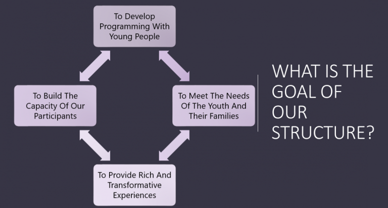

After School COmmunities
SWOP organizers currently work with youth at Marquette School of Excellence, Donald L. Morrill Elementary School, and Talman Elementary School. SWOP organizers lead after school programs which encourage academic, social, and emotional growth. Organizers and youth build relationships with one another and create community. They’re creating safe spaces through kickbacks, circles, and learning new skills like coding, tumbling, and sports.
SWOP's Youth Engagement Model
“SWOP’S youth engagement model is intrinsically connected to the ways in which all SWOP staff and leaders engage with young people. In all issue areas, the SWOP model engages young people in a methodology based on best practices, dictated by youth organizers with roots in mentor/menteeship, while also being directly informed by young people in relationship with organizers. This model allows for all young people who are connected to SWOP to receive not just an equilateral engagement, but one rooted in values contingent with what they care about.” — SWOP’s Youth Engagement Model